Candidate List 20260606 Previous Day Next Day Section 1: New Sources (age<1d) Cosmological Afterglow
Section 2: Old (1-5d) sources observed last night placeholder
Section 1: New Afterglow/FBOT Cands Last Night (0)
Section 2: Older Sources Observed Last Night (15)
0. ZTF26aayysdx (Afterglow?) [Back to Top] [Share] [Trigger Swift] [Fritz ] [Lasair ]RA, Dec: 263.3541, 37.01048 17h33m24.98s, 37d 0m37.72sGalactic (l, b): 61.75312, 30.78224 ext(g-r) = 0.041LegacySurvey: 1 sources in 3 arcsec Closest: d = 3.06 arcsec, 172.8 deg (east of north) photoz=0.9 (68% bounds 0.82, 1.0), type=REX peak abs mag = -27.43 (68% bounds -27.18, -27.73)
1. ZTF26aayytig (Afterglow?) [Back to Top] [Share] [Trigger Swift] [Fritz ] [Lasair ]RA, Dec: 285.37956, -10.62731 19h 1m31.09s, -10d-37m-38.33sGalactic (l, b): 24.56436, -7.03951 ext(g-r) = 0.48
2. ZTF26aazbfav (Afterglow?) [Back to Top] [Share] [Trigger Swift] [Fritz ] [Lasair ]RA, Dec: 213.21187, -7.70145 14h12m50.85s, -7d-42m-5.21sGalactic (l, b): 335.33964, 49.97765 ext(g-r) = 0.043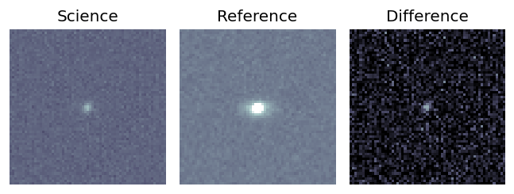
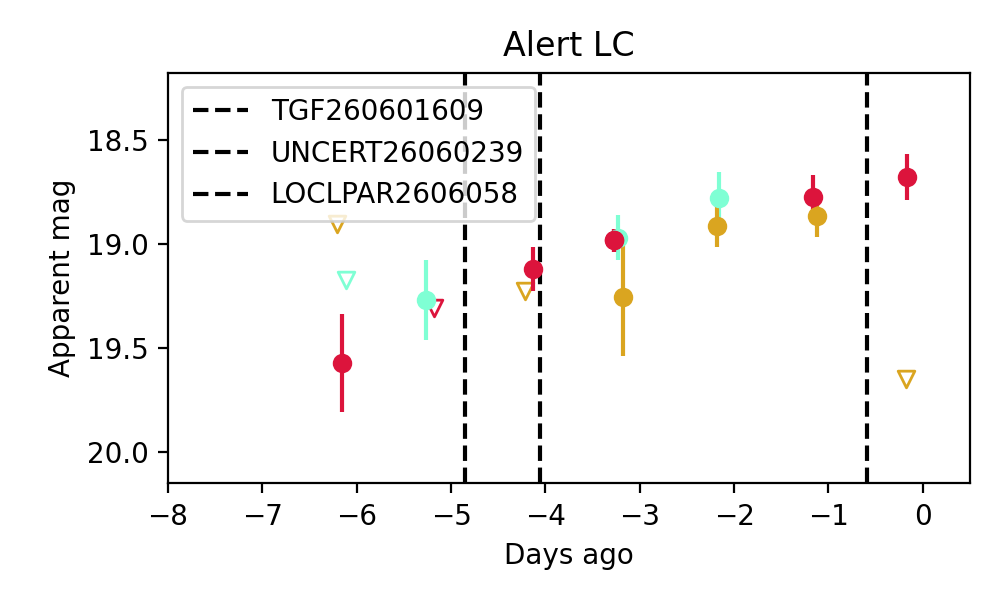
Consistent with synchrotron, g-r>0!
3. ZTF26aazhhaz (Afterglow?) [Back to Top] [Share] [Trigger Swift] [Fritz ] [Lasair ]RA, Dec: 281.27976, 25.9757 18h45m7.14s, 25d58m32.52sGalactic (l, b): 55.77268, 12.81318 ext(g-r) = 0.163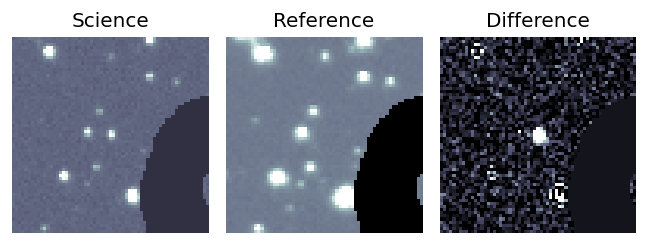
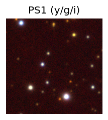
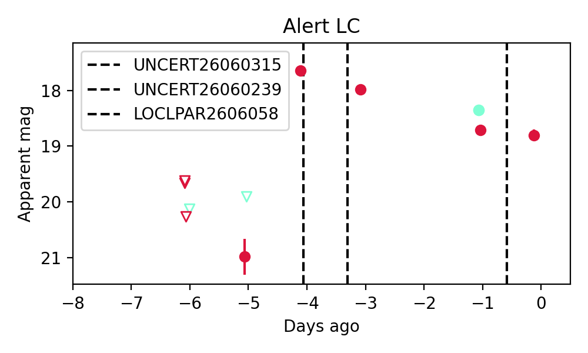
4. ZTF26aazlxah (Afterglow?) [Back to Top] [Share] [Trigger Swift] [Fritz ] [Lasair ]RA, Dec: 255.16079, -0.95804 17h 0m38.59s, 0d-57m-28.93sGalactic (l, b): 18.56224, 23.95405 ext(g-r) = 0.356peak abs mag = -19.01 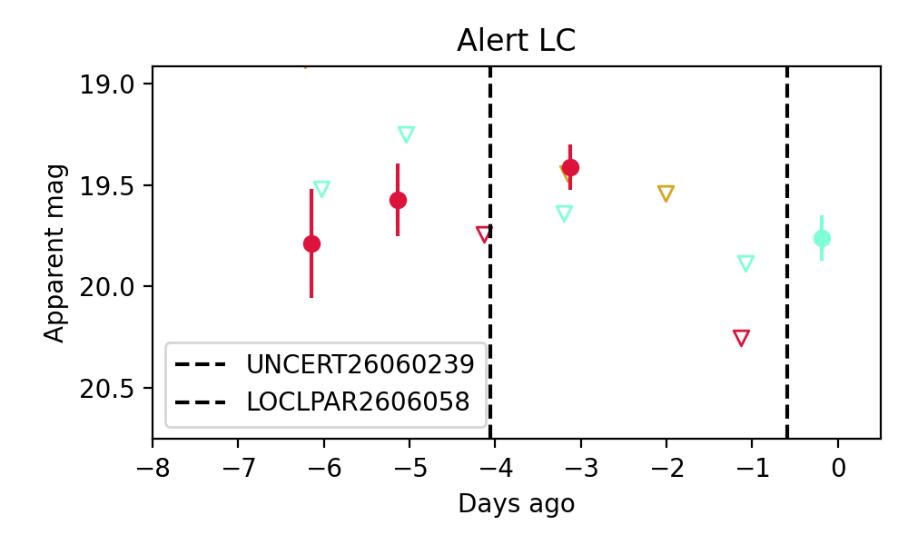
5. ZTF26aazuahv (Afterglow?) [Back to Top] [Share] [Trigger Swift] [Fritz ] [Lasair ]RA, Dec: 224.83299, -14.25886 14h59m19.92s, -14d-15m-31.91sGalactic (l, b): 343.75413, 38.27246 WARNING: 2.63 deg from ecliptic plane ext(g-r) = 0.107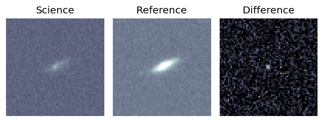
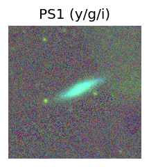
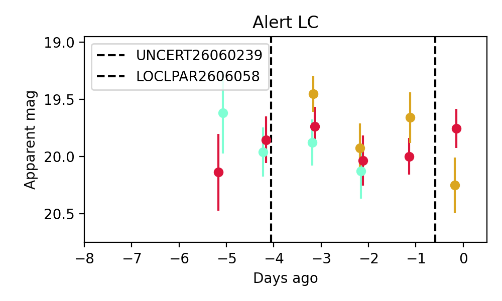
Consistent with synchrotron, g-r>0!
6. ZTF26aazxowv (FBOT?) [Back to Top] [Share] [Trigger Swift] [Fritz ] [Lasair ]RA, Dec: 250.97368, 67.79103 16h43m53.68s, 67d47m27.72sGalactic (l, b): 99.28307, 36.85932 ext(g-r) = 0.035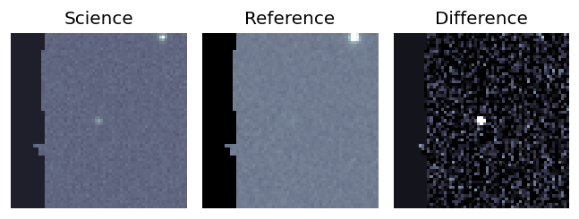
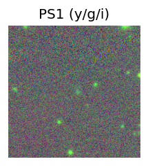
LegacySurvey: 1 sources in 3 arcsec Closest: d = 1.37 arcsec, 256.4 deg (east of north) photoz=0.2 (68% bounds 0.15, 0.27), type=EXP peak abs mag = -20.0 (68% bounds -19.37, -20.73) 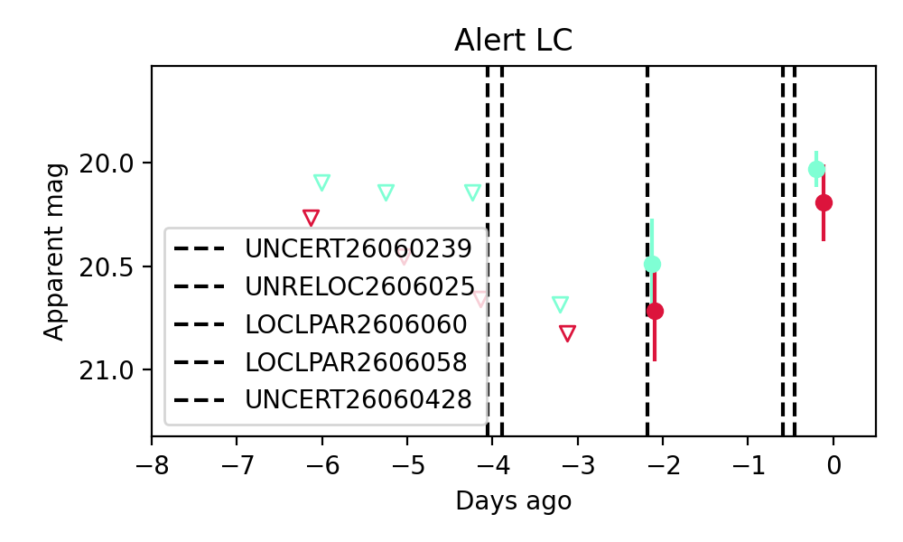
Consistent with synchrotron, g-r>0!
7. ZTF26aazxzdy (Afterglow?) [Back to Top] [Share] [Trigger Swift] [Fritz ] [Lasair ]RA, Dec: 238.7386, -3.00587 15h54m57.27s, -3d 0m-21.13sGalactic (l, b): 6.03317, 36.50005 ext(g-r) = 0.728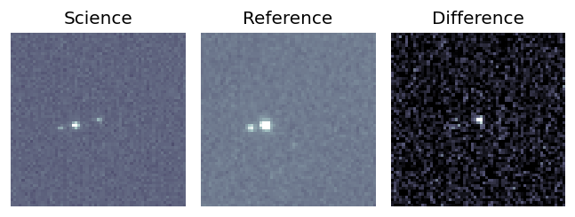
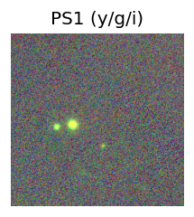
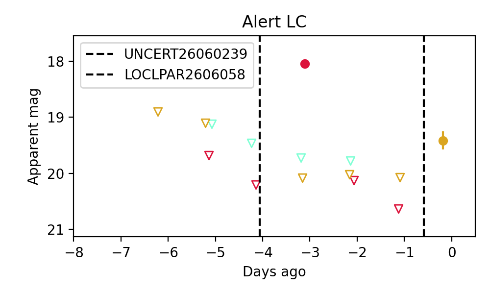
8. ZTF26aazynoc (Afterglow?) [Back to Top] [Share] [Trigger Swift] [Fritz ] [Lasair ]RA, Dec: 220.51769, -11.04556 14h42m4.24s, -11d-2m-44.01sGalactic (l, b): 341.719, 43.34003 WARNING: 4.47 deg from ecliptic plane ext(g-r) = 0.09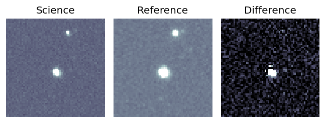
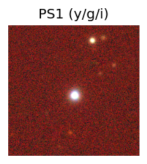
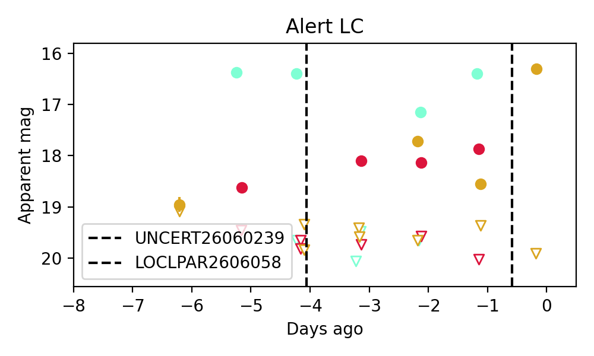
9. ZTF26aazzndi (Afterglow?) [Back to Top] [Share] [Trigger Swift] [Fritz ] [Lasair ]RA, Dec: 218.08824, -5.90291 14h32m21.18s, -5d-54m-10.46sGalactic (l, b): 343.12483, 48.93207 ext(g-r) = 0.064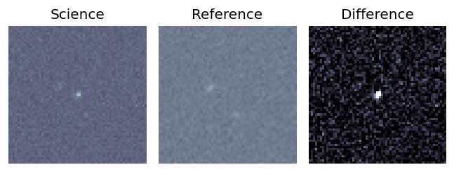
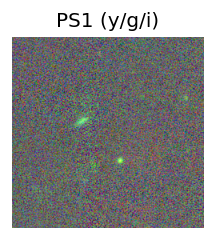
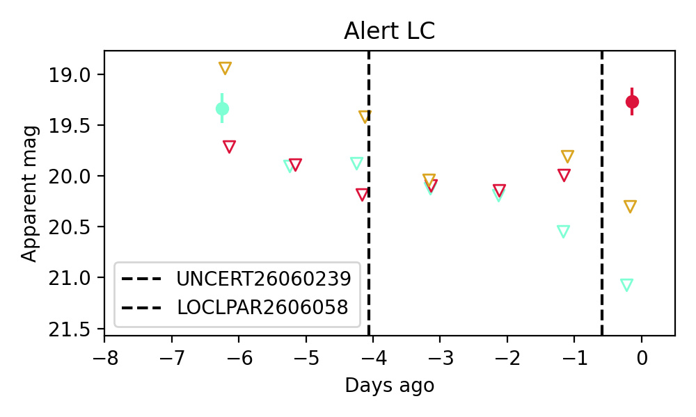
10. ZTF26aazzuxr (Afterglow?) [Back to Top] [Share] [Trigger Swift] [Fritz ] [Lasair ]RA, Dec: 220.5017, -10.16644 14h42m0.41s, -10d-9m-59.19sGalactic (l, b): 342.39599, 44.0705 ext(g-r) = 0.123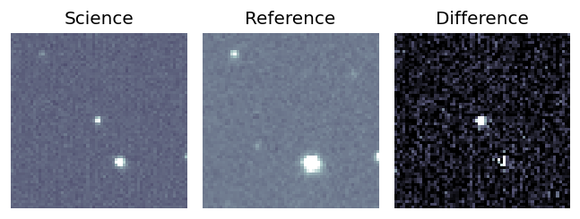
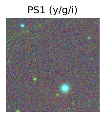
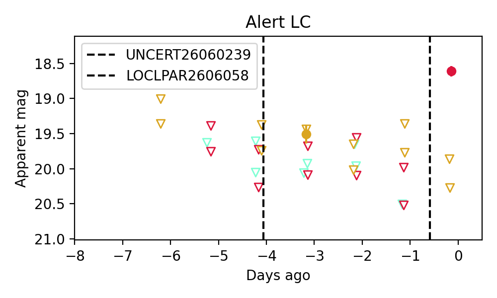
11. ZTF26abaacsw (FBOT?) [Back to Top] [Share] [Trigger Swift] [Fritz ] [Lasair ]RA, Dec: 251.60447, 53.45694 16h46m25.07s, 53d27m24.98sGalactic (l, b): 81.37372, 39.88816 ext(g-r) = 0.052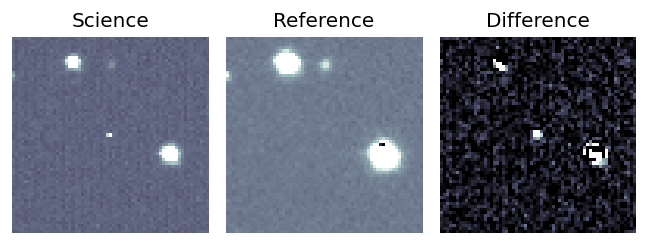
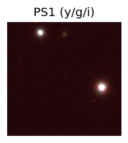
LegacySurvey: 1 sources in 3 arcsec Closest: d = 2.27 arcsec, 353.2 deg (east of north) photoz=0.45 (68% bounds 0.33, 0.59), type=PSF peak abs mag = -22.55 (68% bounds -21.76, -23.26) 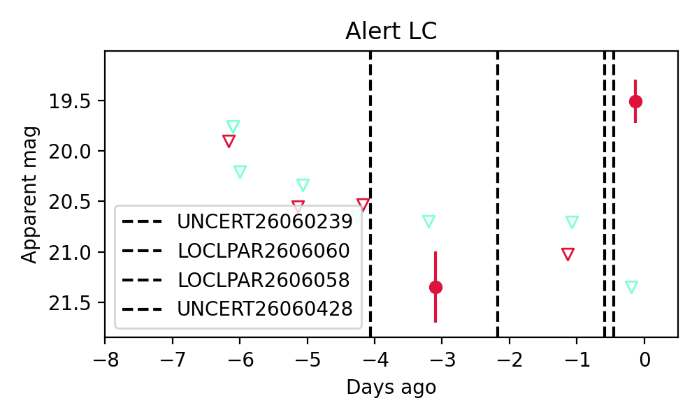
12. ZTF26abaagdw (Afterglow?) [Back to Top] [Share] [Trigger Swift] [Fritz ] [Lasair ]RA, Dec: 247.40565, 2.35128 16h29m37.36s, 2d21m4.62sGalactic (l, b): 17.29848, 32.3105 ext(g-r) = 0.079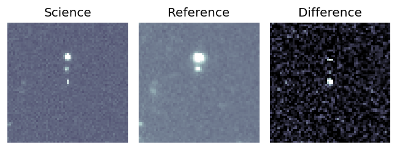
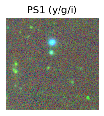
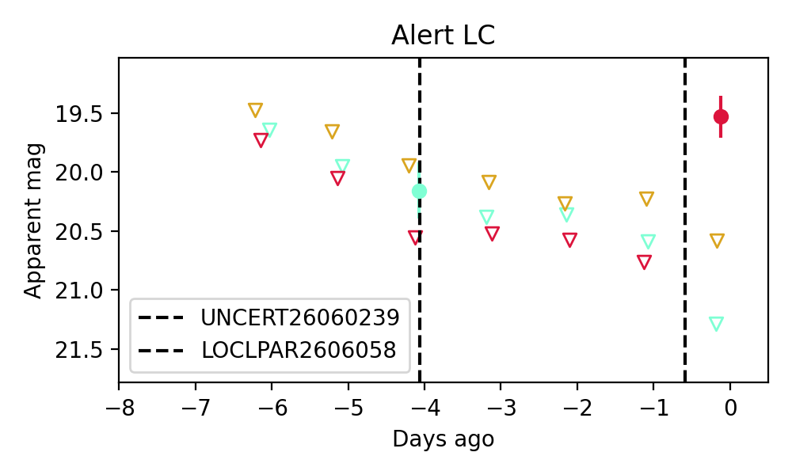
13. ZTF26abaalkc (FBOT?) [Back to Top] [Share] [Trigger Swift] [Fritz ] [Lasair ]RA, Dec: 257.98405, 36.62146 17h11m56.17s, 36d37m17.26sGalactic (l, b): 60.30266, 34.9229 ext(g-r) = 0.038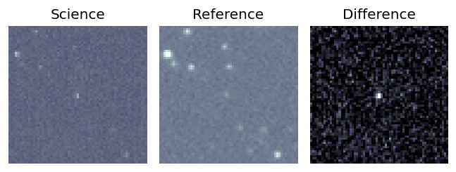
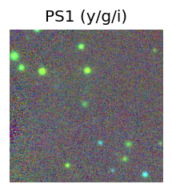
LegacySurvey: 1 sources in 3 arcsec Closest: d = 0.80 arcsec, 65.3 deg (east of north) photoz=0.62 (68% bounds 0.53, 0.7), type=REX peak abs mag = -22.8 (68% bounds -22.36, -23.09) 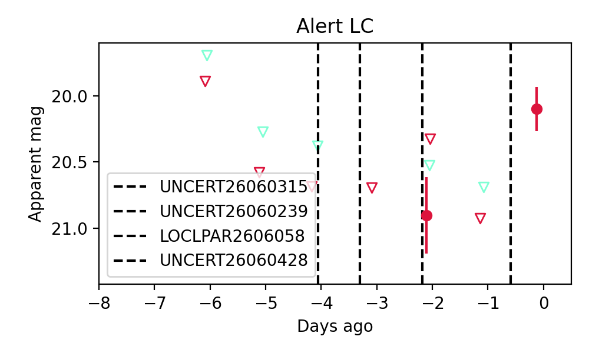
14. ZTF26ababdkp (Afterglow?) [Back to Top] [Share] [Trigger Swift] [Fritz ] [Lasair ]RA, Dec: 283.69288, -8.85473 18h54m46.29s, -8d-51m-17.03sGalactic (l, b): 25.41068, -4.75988 ext(g-r) = 0.381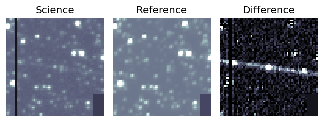
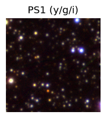
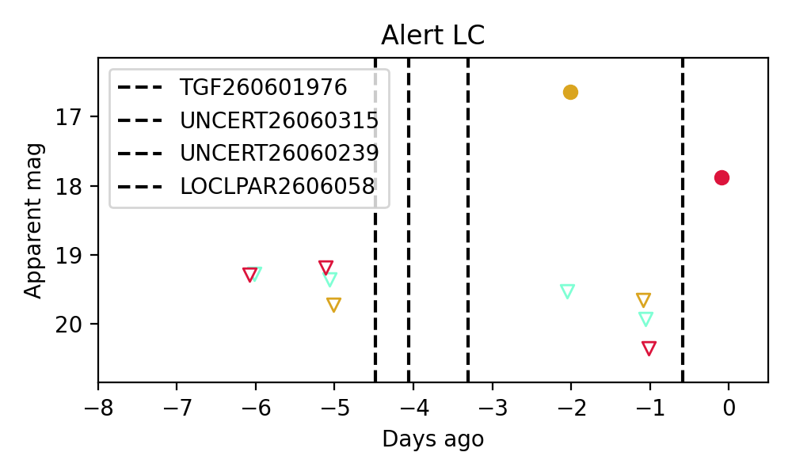